<title>Referentes del sitio</title>
<meta name="claude:viewport-fit-sides" content="cover">
<link rel="preconnect" href="https://fonts.googleapis.com">
<link rel="stylesheet" href="https://fonts.googleapis.com/css2?family=IBM+Plex+Mono:wght@400;500&family=IBM+Plex+Sans:wght@400;500;600&family=Newsreader:opsz,wght@6..72,500&display=swap">
<style>
/* Una mesa de revisión: tarjetas numeradas en columna, la decisión al pie de cada una. */
:root {
  --fondo: #f3f1ec; --hoja: #fbfaf7; --tinta: #1d1b17; --gris: #5f5a51; --filete: #dcd7cc;
  --si: #2f6b3a; --si-fondo: #e3eee2; --no: #8a2f22; --no-fondo: #f3e2dd; --foco: #1d1b17;
  --f-titulo: 'Newsreader', Georgia, serif; --f-texto: 'IBM Plex Sans', system-ui, sans-serif; --f-dato: 'IBM Plex Mono', ui-monospace, monospace;
  --r: 6px;
}
@media (prefers-color-scheme: dark) { :root:not([data-theme="light"]) {
  --fondo: #171614; --hoja: #201e1b; --tinta: #efebe3; --gris: #a8a196; --filete: #36322c;
  --si: #8fc79a; --si-fondo: #22352a; --no: #e4998c; --no-fondo: #3d2520; --foco: #efebe3; color-scheme: dark; } }
:root[data-theme="dark"] {
  --fondo: #171614; --hoja: #201e1b; --tinta: #efebe3; --gris: #a8a196; --filete: #36322c;
  --si: #8fc79a; --si-fondo: #22352a; --no: #e4998c; --no-fondo: #3d2520; --foco: #efebe3; color-scheme: dark; }
* { box-sizing: border-box; }
body { margin: 0; background: var(--fondo); color: var(--tinta); font: 400 16px/1.55 var(--f-texto); }
img { max-width: 100%; height: auto; display: block; }
a { color: inherit; }
.envoltorio { max-width: 980px; margin: 0 auto; padding-block: 36px 96px; padding-left: max(16px, env(safe-area-inset-left, 0px)); padding-right: max(16px, env(safe-area-inset-right, 0px)); }
h1, h2, h3 { font-family: var(--f-titulo); font-weight: 500; margin: 0; text-wrap: balance; letter-spacing: -0.01em; }
h1 { font-size: clamp(2rem, 5vw, 3rem); line-height: 1.08; }
h2 { font-size: clamp(1.5rem, 3.4vw, 2rem); line-height: 1.15; }
h3 { font-size: 1.35rem; line-height: 1.2; }
p { margin: 0; }
.dato { font-family: var(--f-dato); font-size: 0.8125rem; color: var(--gris); }
.cab { display: grid; gap: 14px; padding-bottom: 28px; border-bottom: 1px solid var(--filete); }
.cab ol { margin: 0; padding-left: 20px; display: grid; gap: 4px; max-width: 64ch; }
.cuenta { display: flex; flex-wrap: wrap; gap: 8px 18px; font-family: var(--f-dato); font-size: 0.875rem; }
.cuenta b { font-weight: 500; }
.aviso { padding: 12px 14px; border: 1px solid var(--filete); border-radius: var(--r); background: var(--hoja); max-width: 64ch; }
.indice { display: flex; flex-wrap: wrap; gap: 8px; margin: 0; padding: 0; list-style: none; }
.indice a { display: inline-block; padding: 6px 10px; border: 1px solid var(--filete); border-radius: var(--r); text-decoration: none; font-size: 0.875rem; background: var(--hoja); }
.linea { padding-top: 56px; display: grid; gap: 22px; }
.linea__cab { display: grid; gap: 6px; max-width: 64ch; }
.linea__k { font-family: var(--f-dato); font-size: 0.8125rem; color: var(--gris); text-transform: uppercase; letter-spacing: 0.08em; }
.linea__tesis { color: var(--gris); }
.linea__nota { max-width: 64ch; margin-top: 8px; font-size: 0.9375rem; }
.ref { background: var(--hoja); border: 1px solid var(--filete); border-radius: var(--r); padding: 18px; display: grid; gap: 14px; scroll-margin-top: 12px; }
.ref[data-voto="si"] { border-color: var(--si); }
.ref[data-voto="no"] { border-color: var(--no); }
.ref__cab { display: grid; grid-template-columns: auto minmax(0, 1fr); gap: 14px; align-items: baseline; }
.ref__n { font-family: var(--f-dato); font-size: 1.5rem; font-variant-numeric: tabular-nums; color: var(--gris); min-width: 2ch; }
.ref__meta { font-family: var(--f-dato); font-size: 0.8125rem; color: var(--gris); overflow-wrap: anywhere; }
.ref__vistas { display: grid; grid-template-columns: minmax(0, 1fr) minmax(0, 0.28fr); gap: 12px; align-items: start; }
.ref__vistas figure { margin: 0; display: grid; gap: 6px; }
.ref__vistas figure a { display: block; border: 1px solid var(--filete); border-radius: 4px; overflow: hidden; background: var(--fondo); }
.ref__vistas figcaption { font-family: var(--f-dato); font-size: 0.75rem; color: var(--gris); }
.ref__com textarea::placeholder { color: var(--gris); opacity: 1; }
.ref__completa summary, .ref__ojo summary { cursor: pointer; font-size: 0.9375rem; color: var(--gris); }
.ref__ojo p { margin-top: 8px; max-width: 64ch; color: var(--gris); font-size: 0.9375rem; }
.ref__completa img { margin-top: 10px; max-width: 480px; width: 100%; border: 1px solid var(--filete); border-radius: 4px; }
.ref__notas { margin: 0; display: grid; gap: 8px; }
.ref__notas div { display: grid; grid-template-columns: 11rem minmax(0, 1fr); gap: 12px; }
.ref__notas dt { font-size: 0.875rem; color: var(--gris); }
.ref__notas dd { margin: 0; max-width: 64ch; }
.ref__voto { display: grid; grid-template-columns: auto auto minmax(0, 1fr); gap: 10px; align-items: start; padding-top: 12px; border-top: 1px solid var(--filete); }
.v { font: 500 1rem var(--f-texto); padding: 10px 20px; border-radius: var(--r); border: 1px solid var(--filete); background: transparent; color: var(--tinta); cursor: pointer; min-height: 44px; }
.v[data-v="si"][aria-pressed="true"] { background: var(--si-fondo); border-color: var(--si); color: var(--si); }
.v[data-v="no"][aria-pressed="true"] { background: var(--no-fondo); border-color: var(--no); color: var(--no); }
.v:disabled { opacity: 0.5; cursor: default; }
.ref__com textarea { width: 100%; font: 400 0.9375rem/1.45 var(--f-texto); color: var(--tinta); background: var(--fondo); border: 1px solid var(--filete); border-radius: var(--r); padding: 9px 10px; resize: vertical; min-height: 44px; }
.ref__estado { grid-column: 1 / -1; font-family: var(--f-dato); font-size: 0.75rem; color: var(--gris); min-height: 1em; }
:focus-visible { outline: 2px solid var(--foco); outline-offset: 2px; }
.sr { position: absolute; width: 1px; height: 1px; overflow: hidden; clip: rect(0 0 0 0); white-space: nowrap; }
@media (max-width: 640px) {
  .ref__vistas { grid-template-columns: minmax(0, 1fr); }
  .ref__m { width: min(100%, 300px); }
  .ref__notas div { grid-template-columns: minmax(0, 1fr); gap: 2px; }
  .ref__voto { grid-template-columns: 1fr 1fr; }
  .ref__com { grid-column: 1 / -1; }
}
@media (prefers-reduced-motion: no-preference) { .ref { transition: border-color .2s; } }
</style>

<main class="envoltorio">
<header class="cab">
  <p class="dato">SpindleLab · E10 · 15-oct-2026 · Lucía, dirección de arte</p>
  <h1>Referentes para el sitio nuevo</h1>
  <p style="max-width:64ch">12 sitios reales en 4 líneas distintas. Ninguno usa bandas de color como recurso principal y todos buscan verse cálidos y de confianza. Marca cada uno y, si quieres, deja una línea de por qué: con tus sí y tus no, Lucía arma las dos direcciones.</p>
  <ol>
    <li>Mira las dos capturas: escritorio y teléfono. Abajo está la página completa.</li>
    <li>Toca <b>Sí</b> o <b>No</b>. El comentario es opcional y se guarda solo.</li>
    <li>No hace falta marcar todos: con los que te llamen la atención basta.</li>
  </ol>
  <p style="max-width:64ch">Un sí es un sí al rasgo que dice «Qué se toma», no al color ni al rubro de ese sitio. Lo que un sitio hace con la escritura no entra: el texto de tu sitio se queda.</p>
  <p class="dato" style="max-width:64ch">Un dato para elegir: el punto dorado del wordmark (#C9A227) contrasta poco sobre los fondos claros de A, B y C (2,2 a 2,4 a 1) y bien sobre los oscuros de D (5,7 a 7,7 a 1), aunque sobre un negro cálido el dorado tira a mostaza. Se resuelve en el lock.</p>
  <p class="cuenta" aria-live="polite"><span>Marcados <b id="n-marcados">0</b> de 12</span><span>Sí <b id="n-si">0</b></span><span>No <b id="n-no">0</b></span></p>
  <p class="aviso" id="sin-db" hidden>Esta vista no puede guardar tus marcas. Respóndeme en el chat con los números, por ejemplo «sí: 2, 7, 11; no: 5».</p>
  <nav aria-label="Líneas"><ul class="indice"><li><a href="#linea-a">A · Editorial cálida</a></li><li><a href="#linea-b">B · De autor</a></li><li><a href="#linea-c">C · Documento técnico claro</a></li><li><a href="#linea-d">D · Oscura y cálida</a></li></ul></nav>
</header>

<section class="linea" id="linea-a">
  <div class="linea__cab"><p class="linea__k">Línea A</p><h2>Editorial cálida</h2><p class="linea__tesis">Una consultora que se presenta como una publicación seria: lienzo claro y cálido, letra de lectura y fotografía de personas reales en su oficio, con el ritmo de una revista de negocios y no el grito de un estudio.</p></div>
  
<article class="ref" id="r1" data-id="a1-gehl">
  <header class="ref__cab">
    <span class="ref__n">1</span>
    <div class="ref__nom">
      <h3>Gehl</h3>
      <p class="ref__meta"><a href="https://gehlpeople.com" target="_blank" rel="noopener">gehlpeople.com</a> · servicios B2B</p>
    </div>
  </header>
  <div class="ref__vistas">
    <figure class="ref__d"><a href="a/a1-gehl-1440.jpg" target="_blank" rel="noopener" aria-label="Ampliar la captura de escritorio de Gehl">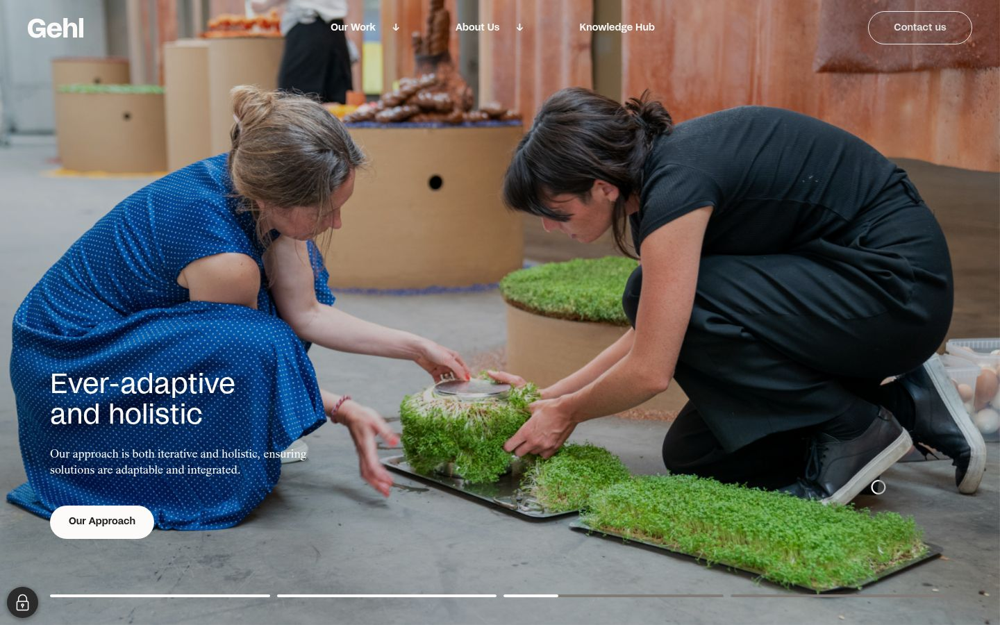</a><figcaption>Escritorio · toca para ampliar</figcaption></figure>
    <figure class="ref__m"><a href="a/a1-gehl-390.jpg" target="_blank" rel="noopener" aria-label="Ampliar la captura de teléfono de Gehl">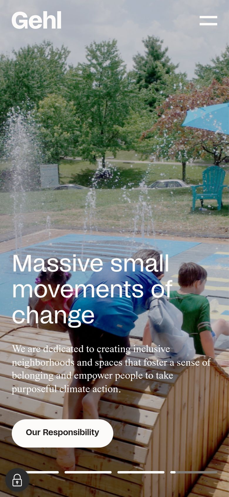</a><figcaption>Teléfono</figcaption></figure>
  </div>
  <details class="ref__completa"><summary>Ver la página completa</summary>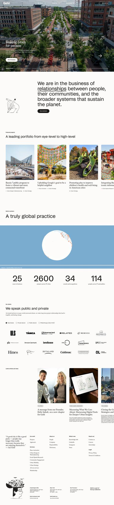</details>
  <dl class="ref__notas">
    <div><dt>Qué se toma</dt><dd>Fotografía de personas usando lo que la firma hizo, a sangre en la primera pantalla, y el título de cada caso en una Times de lectura (TimesNow, 28 px) bajo su foto: cada proyecto se cuenta por lo que le pasa a la gente, no por el entregable.</dd></div>
    <div><dt>Por qué se siente cálido</dt><dd>Cada imagen tiene gente real en el lugar, y la serif de lectura en el texto baja el tono técnico hasta sonar a conversación.</dd></div>
  </dl>
  <details class="ref__ojo"><summary>Lo que no se toma y los riesgos</summary><p>Es una consultora de urbanismo y se puede leer como estudio de diseño. El hero es un carrusel (las tres capturas muestran fotos distintas) y los titulares van en sans. Más abajo hay una banda celeste con un globo, una fila de cifras y un muro de logos, que no se toman. SpindleLab no tiene hoy fotos de gente usando lo hecho: habría que producirlas con clientes reales y su permiso.</p></details>
  <div class="ref__voto" role="group" aria-label="Tu marca para el 1">
    <button type="button" class="v" data-v="si" aria-pressed="false">Sí</button>
    <button type="button" class="v" data-v="no" aria-pressed="false">No</button>
    <label class="ref__com"><span class="sr">Comentario sobre el 1</span><textarea id="c-a1-gehl" rows="2" placeholder="Comentario (opcional): qué te gusta o qué no"></textarea></label>
    <p class="ref__estado" aria-live="polite"></p>
  </div>
</article>

<article class="ref" id="r2" data-id="a4-theready">
  <header class="ref__cab">
    <span class="ref__n">2</span>
    <div class="ref__nom">
      <h3>The Ready</h3>
      <p class="ref__meta"><a href="https://www.theready.com" target="_blank" rel="noopener">theready.com</a> · servicios B2B</p>
    </div>
  </header>
  <div class="ref__vistas">
    <figure class="ref__d"><a href="a/a4-theready-1440.jpg" target="_blank" rel="noopener" aria-label="Ampliar la captura de escritorio de The Ready">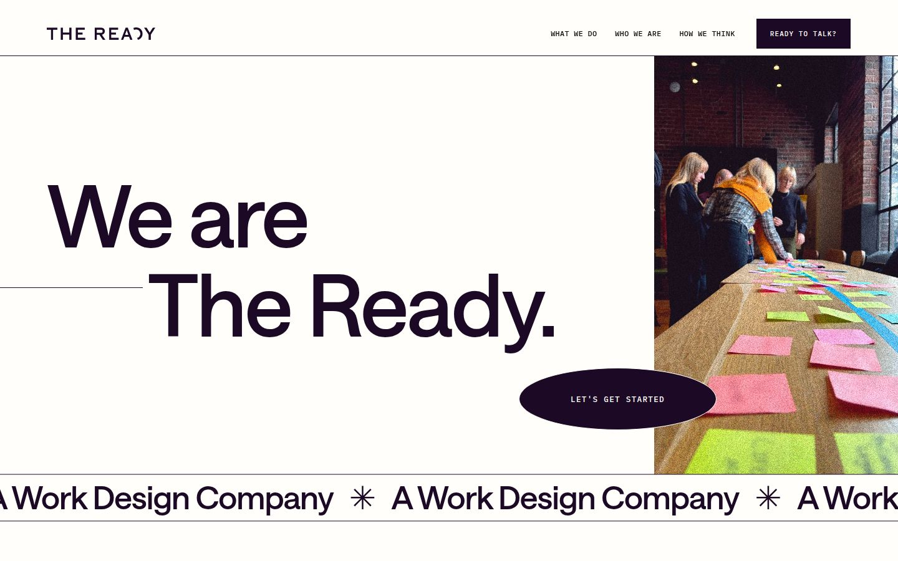</a><figcaption>Escritorio · toca para ampliar</figcaption></figure>
    <figure class="ref__m"><a href="a/a4-theready-390.jpg" target="_blank" rel="noopener" aria-label="Ampliar la captura de teléfono de The Ready">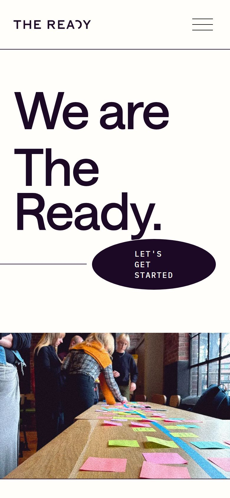</a><figcaption>Teléfono</figcaption></figure>
  </div>
  <details class="ref__completa"><summary>Ver la página completa</summary>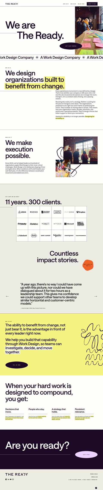</details>
  <dl class="ref__notas">
    <div><dt>Qué se toma</dt><dd>La foto de taller sin pose (gente de pie ante una mesa llena de post-its, con grano) a sangre en la columna derecha, junto a un titular directo y grande sobre blanco roto rgb(255,254,250).</dd></div>
    <div><dt>Por qué se siente cálido</dt><dd>La foto es trabajo de verdad, desordenado y en curso, y el texto directo sobre blanco roto suena a alguien que se arremanga contigo, no a un proveedor.</dd></div>
  </dl>
  <details class="ref__ojo"><summary>Lo que no se toma y los riesgos</summary><p>No tiene serif (Saans con IBM Plex Mono). La cinta en movimiento «A Work Design Company», el botón óvalo y el subrayado amarillo sobre palabras (tell #4) son tics de agencia y no se toman. Más abajo tiene una banda amarilla, un muro de logos y una banda final berenjena. Se toma solo el primer pantallazo. La partición titular a la izquierda y foto a la derecha es un recurso muy visto: no es lo que se toma.</p></details>
  <div class="ref__voto" role="group" aria-label="Tu marca para el 2">
    <button type="button" class="v" data-v="si" aria-pressed="false">Sí</button>
    <button type="button" class="v" data-v="no" aria-pressed="false">No</button>
    <label class="ref__com"><span class="sr">Comentario sobre el 2</span><textarea id="c-a4-theready" rows="2" placeholder="Comentario (opcional): qué te gusta o qué no"></textarea></label>
    <p class="ref__estado" aria-live="polite"></p>
  </div>
</article>

<article class="ref" id="r3" data-id="a5-priyaparker">
  <header class="ref__cab">
    <span class="ref__n">3</span>
    <div class="ref__nom">
      <h3>Priya Parker</h3>
      <p class="ref__meta"><a href="https://www.priyaparker.com" target="_blank" rel="noopener">priyaparker.com</a> · independiente</p>
    </div>
  </header>
  <div class="ref__vistas">
    <figure class="ref__d"><a href="a/a5-priyaparker-1440.jpg" target="_blank" rel="noopener" aria-label="Ampliar la captura de escritorio de Priya Parker">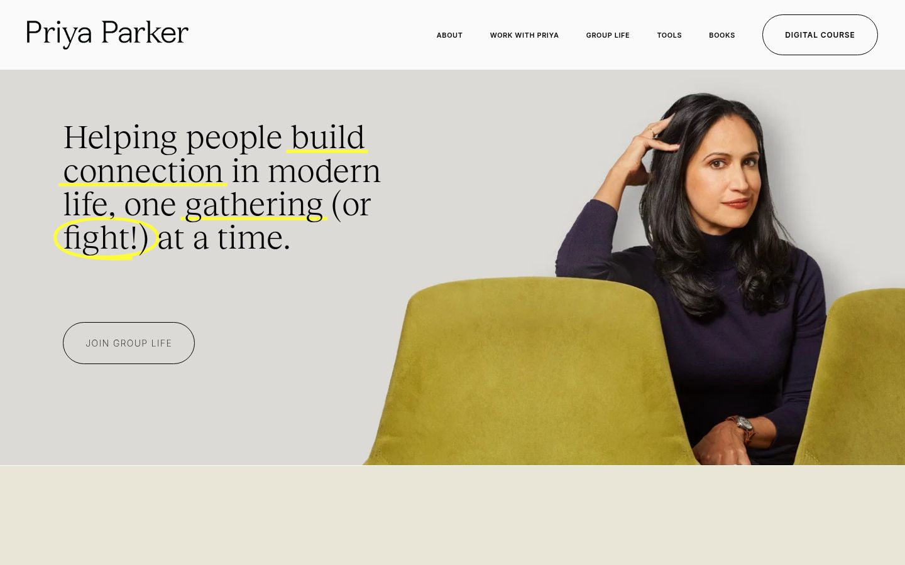</a><figcaption>Escritorio · toca para ampliar</figcaption></figure>
    <figure class="ref__m"><a href="a/a5-priyaparker-390.jpg" target="_blank" rel="noopener" aria-label="Ampliar la captura de teléfono de Priya Parker">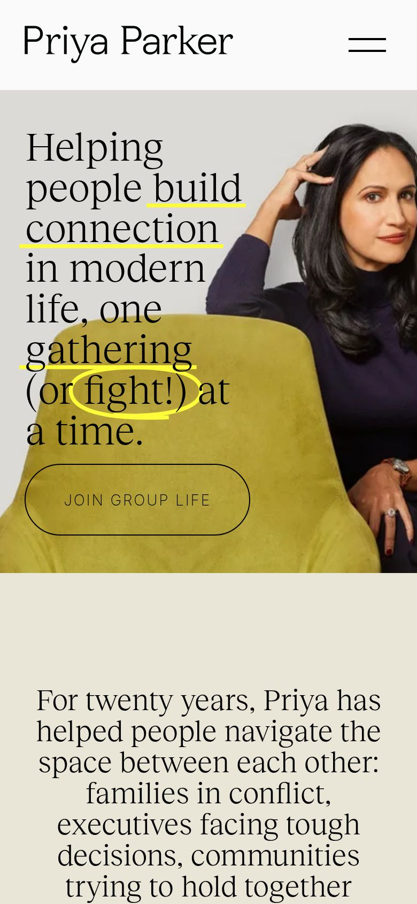</a><figcaption>Teléfono</figcaption></figure>
  </div>
  <details class="ref__completa"><summary>Ver la página completa</summary>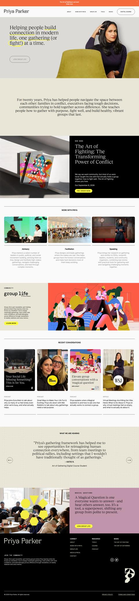</details>
  <dl class="ref__notas">
    <div><dt>Qué se toma</dt><dd>El retrato editorial a media pantalla, con luz natural y un sillón como único color, junto al titular en serif ligera (Reckless Light, 53 px); y debajo, una entradilla en la misma serif (unos 36 px) sobre fondo arena, como abre una revista, antes de cualquier oferta.</dd></div>
    <div><dt>Por qué se siente cálido</dt><dd>La primera pantalla es una persona mirándote y hablándote en letra de lectura, y más abajo aparece trabajando de verdad con grupos (asesoría, facilitación, charlas).</dd></div>
  </dl>
  <details class="ref__ojo"><summary>Lo que no se toma y los riesgos</summary><p>El trazo amarillo a mano alrededor de «fight!» y los subrayados del titular son el tell #4 (palabra decorada): no se toman. Bajo el primer pantallazo hay bloques de color plano (negro, lila), una ilustración saturada, y arriba una barra naranja que anuncia su libro: se toman solo el retrato y la entradilla. La entradilla va centrada. A 390 el titular queda encima de la foto y se lee mal. La fuente cargada es una licencia de prueba (RecklessTRIAL). La partición titular a la izquierda y foto a la derecha es un recurso muy visto: no es lo que se toma.</p></details>
  <div class="ref__voto" role="group" aria-label="Tu marca para el 3">
    <button type="button" class="v" data-v="si" aria-pressed="false">Sí</button>
    <button type="button" class="v" data-v="no" aria-pressed="false">No</button>
    <label class="ref__com"><span class="sr">Comentario sobre el 3</span><textarea id="c-a5-priyaparker" rows="2" placeholder="Comentario (opcional): qué te gusta o qué no"></textarea></label>
    <p class="ref__estado" aria-live="polite"></p>
  </div>
</article>
</section>

<section class="linea" id="linea-b">
  <div class="linea__cab"><p class="linea__k">Línea B</p><h2>De autor</h2><p class="linea__tesis">La confianza viene de ver quién responde: una persona con nombre, cara y voz en primera persona, y su obra real cargando la página en vez de bandas de color o efectos de agencia. Los cuatro son de oficios creativos (escritura, datos, diseño): mira el rasgo, no el rubro.</p></div>
  
<article class="ref" id="r4" data-id="b1-nickparker">
  <header class="ref__cab">
    <span class="ref__n">4</span>
    <div class="ref__nom">
      <h3>Nick Parker</h3>
      <p class="ref__meta"><a href="https://nickparker.co.uk/" target="_blank" rel="noopener">nickparker.co.uk</a> · servicios B2B</p>
    </div>
  </header>
  <div class="ref__vistas">
    <figure class="ref__d"><a href="b/b1-nickparker-1440.jpg" target="_blank" rel="noopener" aria-label="Ampliar la captura de escritorio de Nick Parker">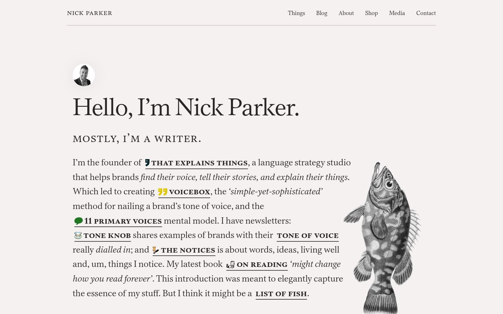</a><figcaption>Escritorio · toca para ampliar</figcaption></figure>
    <figure class="ref__m"><a href="b/b1-nickparker-390.jpg" target="_blank" rel="noopener" aria-label="Ampliar la captura de teléfono de Nick Parker">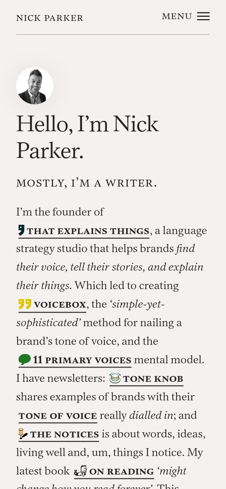</a><figcaption>Teléfono</figcaption></figure>
  </div>
  <details class="ref__completa"><summary>Ver la página completa</summary>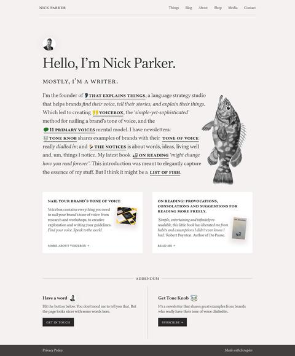</details>
  <dl class="ref__notas">
    <div><dt>Qué se toma</dt><dd>La letra Lector sobre un papel rosado muy claro (#F5F1F1) con texto casi negro, un retrato chico y un grabado antiguo en lugar de una foto de banco, y los enlaces destacados en versalitas negritas.</dd></div>
    <div><dt>Por qué se siente cálido</dt><dd>Abre con «Hello, I'm Nick Parker. Mostly, I'm a writer.», un retrato chico y un grabado antiguo de un pez en vez de una foto de stock: es una persona hablando, no una agencia.</dd></div>
  </dl>
  <details class="ref__ojo"><summary>Lo que no se toma y los riesgos</summary><p>Roza el cliché de papel claro con serif; lo salvan Lector (no una serif genérica) y que no hay terracota ni palabra en cursiva de adorno. La home es corta y sin casos: es un rasgo puntual, no un sistema completo. Los mini-logos de color delante de cada enlace, copiados, rozan el tic del emoji como ícono. Su párrafo de presentación que hace de menú es una forma de escribir la home: eso no se toma. Lo que este sitio hace con la escritura no entra: el texto de tu sitio se queda como está.</p></details>
  <div class="ref__voto" role="group" aria-label="Tu marca para el 4">
    <button type="button" class="v" data-v="si" aria-pressed="false">Sí</button>
    <button type="button" class="v" data-v="no" aria-pressed="false">No</button>
    <label class="ref__com"><span class="sr">Comentario sobre el 4</span><textarea id="c-b1-nickparker" rows="2" placeholder="Comentario (opcional): qué te gusta o qué no"></textarea></label>
    <p class="ref__estado" aria-live="polite"></p>
  </div>
</article>

<article class="ref" id="r5" data-id="b3-stefaner">
  <header class="ref__cab">
    <span class="ref__n">5</span>
    <div class="ref__nom">
      <h3>Moritz Stefaner · Truth &amp; Beauty</h3>
      <p class="ref__meta"><a href="https://truth-and-beauty.net/" target="_blank" rel="noopener">truth-and-beauty.net</a> · independiente</p>
    </div>
  </header>
  <div class="ref__vistas">
    <figure class="ref__d"><a href="b/b3-stefaner-1440.jpg" target="_blank" rel="noopener" aria-label="Ampliar la captura de escritorio de Moritz Stefaner · Truth &amp; Beauty">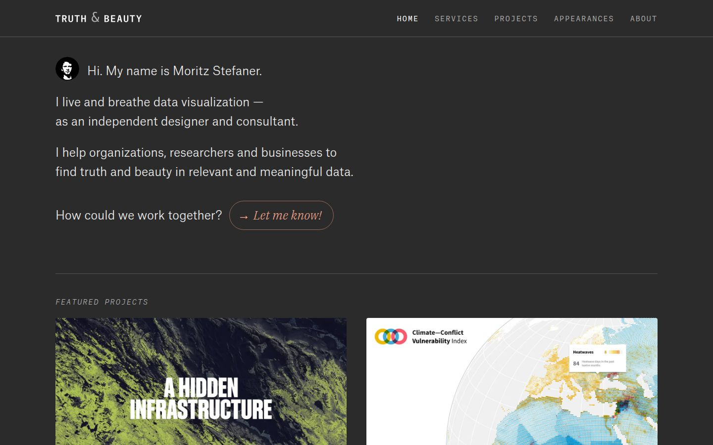</a><figcaption>Escritorio · toca para ampliar</figcaption></figure>
    <figure class="ref__m"><a href="b/b3-stefaner-390.jpg" target="_blank" rel="noopener" aria-label="Ampliar la captura de teléfono de Moritz Stefaner · Truth &amp; Beauty">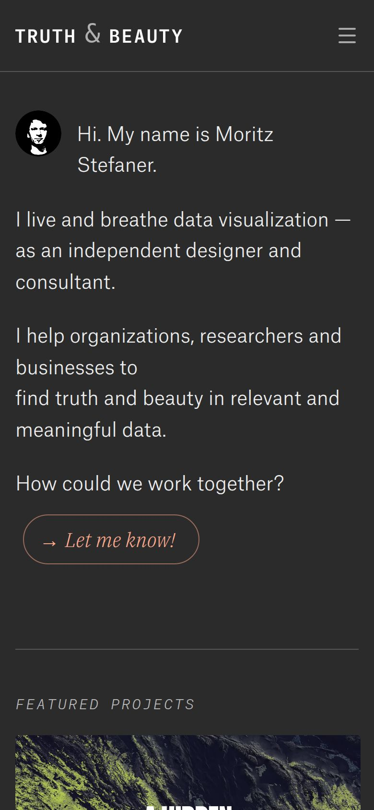</a><figcaption>Teléfono</figcaption></figure>
  </div>
  <details class="ref__completa"><summary>Ver la página completa</summary>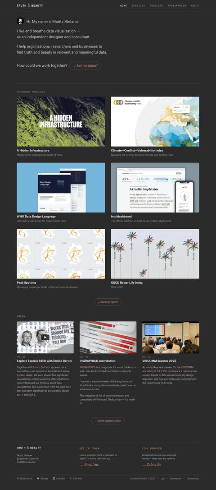</details>
  <dl class="ref__notas">
    <div><dt>Qué se toma</dt><dd>El oscuro carbón #2B2B2B (no negro) con una grotesca en peso ligero (Atlas Grotesk 300, 24 px), un único llamado en serif cursiva y, debajo, los proyectos reales en una grilla de dos.</dd></div>
    <div><dt>Por qué se siente cálido</dt><dd>Es oscuro y no se siente frío: carbón #2B2B2B y no negro, texto en peso light, cero gritos tipográficos y un llamado que pregunta en vez de vender.</dd></div>
  </dl>
  <details class="ref__ojo"><summary>Lo que no se toma y los riesgos</summary><p>Fondo oscuro con un solo acento cálido, pegado al cliché «oscuro más un acento» (aunque el acento no es ácido). Si se toma, es el tono del primer pantallazo, no el modo de todo el sitio. Las miniaturas de proyectos traen sus propios colores saturados. No se parece a driftime: no hay display gigante ni campos de color. La apertura «Hi. My name is…» es escritura y no se toma. Lo que este sitio hace con la escritura no entra: el texto de tu sitio se queda como está.</p></details>
  <div class="ref__voto" role="group" aria-label="Tu marca para el 5">
    <button type="button" class="v" data-v="si" aria-pressed="false">Sí</button>
    <button type="button" class="v" data-v="no" aria-pressed="false">No</button>
    <label class="ref__com"><span class="sr">Comentario sobre el 5</span><textarea id="c-b3-stefaner" rows="2" placeholder="Comentario (opcional): qué te gusta o qué no"></textarea></label>
    <p class="ref__estado" aria-live="polite"></p>
  </div>
</article>

<article class="ref" id="r6" data-id="b4-asbury">
  <header class="ref__cab">
    <span class="ref__n">6</span>
    <div class="ref__nom">
      <h3>Nick Asbury</h3>
      <p class="ref__meta"><a href="https://www.nickasbury.com/" target="_blank" rel="noopener">nickasbury.com</a> · independiente</p>
    </div>
  </header>
  <div class="ref__vistas">
    <figure class="ref__d"><a href="b/b4-asbury-1440.jpg" target="_blank" rel="noopener" aria-label="Ampliar la captura de escritorio de Nick Asbury">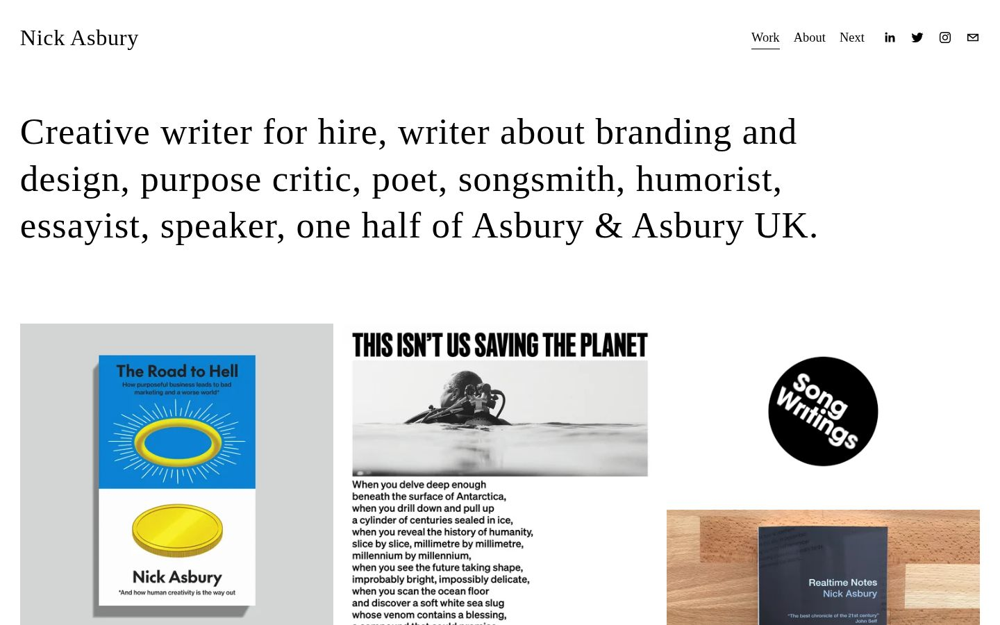</a><figcaption>Escritorio · toca para ampliar</figcaption></figure>
    <figure class="ref__m"><a href="b/b4-asbury-390.jpg" target="_blank" rel="noopener" aria-label="Ampliar la captura de teléfono de Nick Asbury">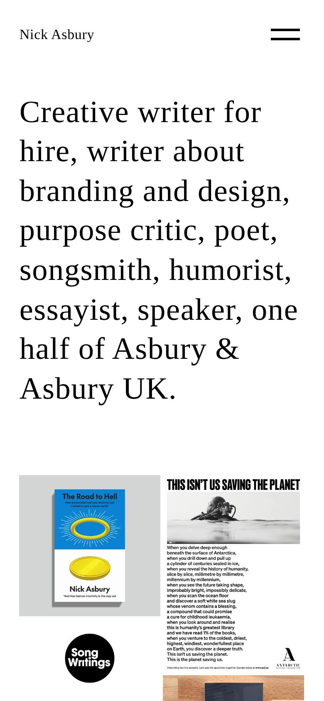</a><figcaption>Teléfono</figcaption></figure>
  </div>
  <details class="ref__completa"><summary>Ver la página completa</summary>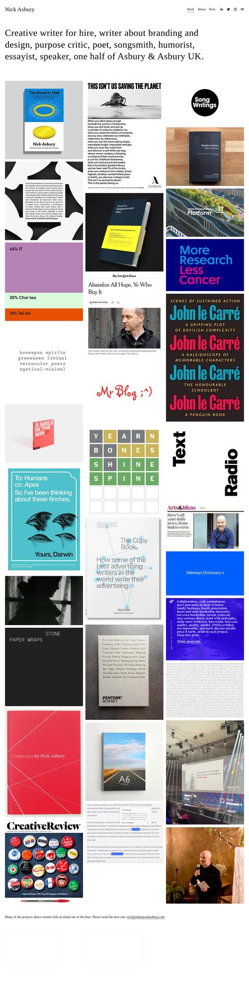</details>
  <dl class="ref__notas">
    <div><dt>Qué se toma</dt><dd>El muro de piezas reales fotografiadas (libros, impresos, notas de prensa) en lugar de logos de clientes; en SpindleLab serían capturas y documentos reales, como robots.txt, JSON-LD y los puntajes, con un tratamiento parejo.</dd></div>
    <div><dt>Por qué se siente cálido</dt><dd>No hay promesa: es alguien diciendo quién es, con humor, y mostrando lo que hizo con sus manos. La prueba física reemplaza al «confían en nosotros».</dd></div>
  </dl>
  <details class="ref__ojo"><summary>Lo que no se toma y los riesgos</summary><p>Usa Georgia y Times del sistema, sin letra propia: vale la composición, no la tipografía. El muro mezcla piezas muy saturadas (azul eléctrico, rojo, morado) y en la página completa se ve ruidoso; para SpindleLab el muro serían capturas y documentos reales (robots.txt, JSON-LD, los puntajes) con un tratamiento parejo. Al pie quedan dos marcos vacíos que parecen embebidos sin cargar. Su hero de una sola frase y nada más no se toma: tu hero lleva el chequeo. Lo que este sitio hace con la escritura no entra: el texto de tu sitio se queda como está. Ojo: en las capturas la serif que se ve no es Georgia, porque el equipo de captura no la tiene instalada.</p></details>
  <div class="ref__voto" role="group" aria-label="Tu marca para el 6">
    <button type="button" class="v" data-v="si" aria-pressed="false">Sí</button>
    <button type="button" class="v" data-v="no" aria-pressed="false">No</button>
    <label class="ref__com"><span class="sr">Comentario sobre el 6</span><textarea id="c-b4-asbury" rows="2" placeholder="Comentario (opcional): qué te gusta o qué no"></textarea></label>
    <p class="ref__estado" aria-live="polite"></p>
  </div>
</article>

<article class="ref" id="r7" data-id="b2-santamaria">
  <header class="ref__cab">
    <span class="ref__n">7</span>
    <div class="ref__nom">
      <h3>Jason Santa Maria</h3>
      <p class="ref__meta"><a href="https://jasonsantamaria.com/" target="_blank" rel="noopener">jasonsantamaria.com</a> · independiente</p>
    </div>
  </header>
  <div class="ref__vistas">
    <figure class="ref__d"><a href="b/b2-santamaria-1440.jpg" target="_blank" rel="noopener" aria-label="Ampliar la captura de escritorio de Jason Santa Maria">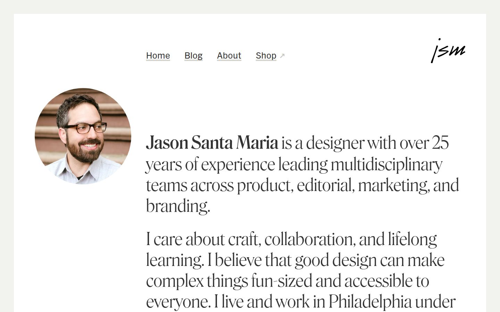</a><figcaption>Escritorio · toca para ampliar</figcaption></figure>
    <figure class="ref__m"><a href="b/b2-santamaria-390.jpg" target="_blank" rel="noopener" aria-label="Ampliar la captura de teléfono de Jason Santa Maria">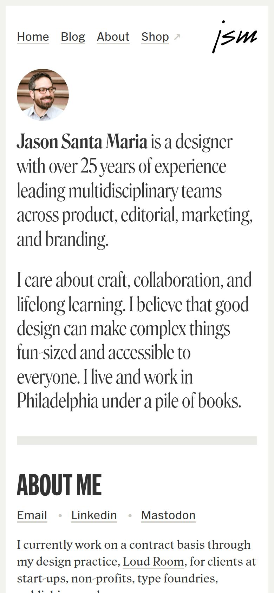</a><figcaption>Teléfono</figcaption></figure>
  </div>
  <details class="ref__completa"><summary>Ver la página completa</summary>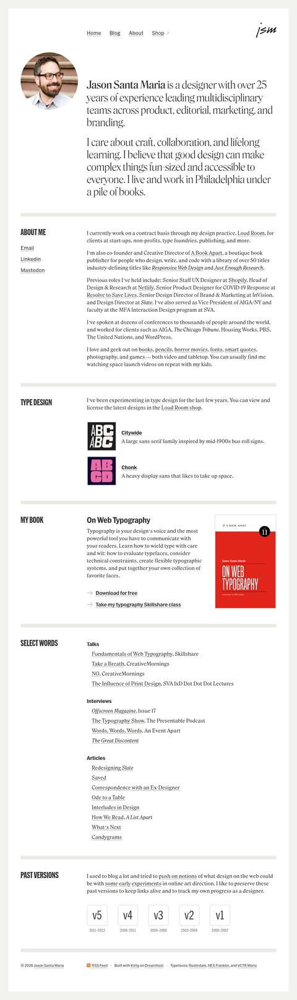</details>
  <dl class="ref__notas">
    <div><dt>Qué se toma</dt><dd>La estructura de dossier: rótulos en mayúsculas condensadas a la izquierda (HEX Franklin 700: «About me», «My book», «Select words») y prosa a la derecha, abierta por una presentación en Roslindale de 50 px junto a un retrato circular, todo sobre una hoja enmarcada en #F2F2EF.</dd></div>
    <div><dt>Por qué se siente cálido</dt><dd>Se lee como el currículum de alguien que firma su trabajo: retrato sonriente, su firma manuscrita «jsm» en la esquina y frases como «vivo y trabajo en Filadelfia bajo una pila de libros».</dd></div>
  </dl>
  <details class="ref__ojo"><summary>Lo que no se toma y los riesgos</summary><p>Serif grande sobre fondo claro: es Roslindale, con carácter y sin acento de color, pero cambiada por una serif genérica cae en el look de IA. Es el sitio de un diseñador que no vende consultoría como oferta principal, y comparte registro con Nick Parker (4): si marcas los dos, lo que se repite es la presentación en serif con retrato chico.</p></details>
  <div class="ref__voto" role="group" aria-label="Tu marca para el 7">
    <button type="button" class="v" data-v="si" aria-pressed="false">Sí</button>
    <button type="button" class="v" data-v="no" aria-pressed="false">No</button>
    <label class="ref__com"><span class="sr">Comentario sobre el 7</span><textarea id="c-b2-santamaria" rows="2" placeholder="Comentario (opcional): qué te gusta o qué no"></textarea></label>
    <p class="ref__estado" aria-live="polite"></p>
  </div>
</article>
</section>

<section class="linea" id="linea-c">
  <div class="linea__cab"><p class="linea__k">Línea C</p><h2>Documento técnico claro</h2><p class="linea__tesis">El sitio se lee como un informe firmado: lo cargan las pruebas (cifras con su fuente, figuras numeradas, fechas y autores) sobre fondo claro, y la calidez la ponen las personas con nombre y una letra hecha para leer, no el color.</p><p class="linea__nota">En esta línea no hay una home de firma de modelo. Se buscó la home de una firma de servicios cálida armada en torno a su archivo o su evidencia, y las que aparecieron eran frías, de plantilla o estaban tapadas por un desafío anti-robots. Las dos referencias son documentos, un ensayo y un informe: de ellas se toma la estructura de prueba (autores, fechas, notas al margen, figuras con su fuente), y la home de SpindleLab se compondría desde ahí.</p></div>
  
<article class="ref" id="r8" data-id="c4-inkandswitch">
  <header class="ref__cab">
    <span class="ref__n">8</span>
    <div class="ref__nom">
      <h3>Ink &amp; Switch · «Local-first software»</h3>
      <p class="ref__meta"><a href="https://www.inkandswitch.com/essay/local-first/" target="_blank" rel="noopener">inkandswitch.com</a> · estudio</p>
    </div>
  </header>
  <div class="ref__vistas">
    <figure class="ref__d"><a href="c/c4-inkandswitch-1440.jpg" target="_blank" rel="noopener" aria-label="Ampliar la captura de escritorio de Ink &amp; Switch · «Local-first software»">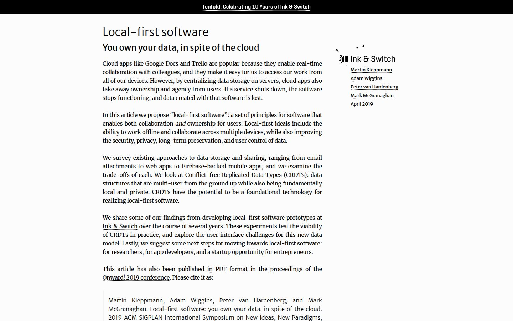</a><figcaption>Escritorio · toca para ampliar</figcaption></figure>
    <figure class="ref__m"><a href="c/c4-inkandswitch-390.jpg" target="_blank" rel="noopener" aria-label="Ampliar la captura de teléfono de Ink &amp; Switch · «Local-first software»">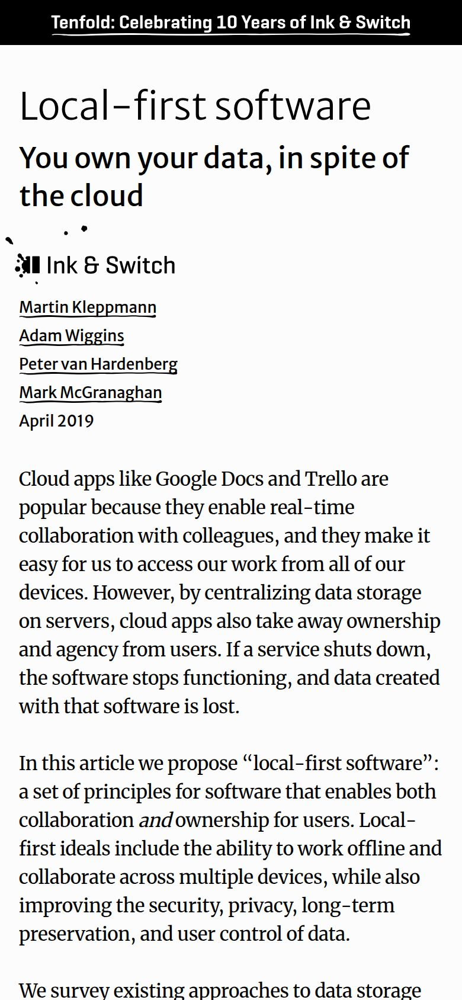</a><figcaption>Teléfono</figcaption></figure>
  </div>
  <details class="ref__completa"><summary>Ver la página completa</summary>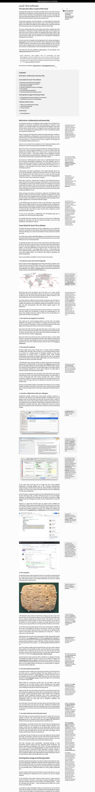</details>
  <dl class="ref__notas">
    <div><dt>Qué se toma</dt><dd>La columna de autoría al margen del título (cuatro nombres subrayados y el mes y el año) y las notas al margen a lo largo del texto, como en un paper: Merriweather para leer y Merriweather Sans para titular, sobre blanco #FCFCFC.</dd></div>
    <div><dt>Por qué se siente cálido</dt><dd>Lo firman cuatro personas con nombre, está escrito en primera persona plural y en una serif de lectura: se lee como una conversación entre colegas, no como un folleto.</dd></div>
  </dl>
  <details class="ref__ojo"><summary>Lo que no se toma y los riesgos</summary><p>Es un ensayo de un laboratorio de investigación, no la home de una firma de servicios, y a 1440 el bloque de texto es denso. Mezcla serif y sans sobre claro: hay que cuidar que no derive al cliché crema con serif (aquí no cae porque el fondo es blanco y no hay acento terracota). La franja negra de arriba es un aviso del propio sitio.</p></details>
  <div class="ref__voto" role="group" aria-label="Tu marca para el 8">
    <button type="button" class="v" data-v="si" aria-pressed="false">Sí</button>
    <button type="button" class="v" data-v="no" aria-pressed="false">No</button>
    <label class="ref__com"><span class="sr">Comentario sobre el 8</span><textarea id="c-c4-inkandswitch" rows="2" placeholder="Comentario (opcional): qué te gusta o qué no"></textarea></label>
    <p class="ref__estado" aria-live="polite"></p>
  </div>
</article>

<article class="ref" id="r9" data-id="c6-webalmanac">
  <header class="ref__cab">
    <span class="ref__n">9</span>
    <div class="ref__nom">
      <h3>Web Almanac de HTTP Archive · capítulo SEO 2022, en castellano</h3>
      <p class="ref__meta"><a href="https://almanac.httparchive.org/es/2022/seo" target="_blank" rel="noopener">almanac.httparchive.org</a> · otro</p>
    </div>
  </header>
  <div class="ref__vistas">
    <figure class="ref__d"><a href="c/c6-webalmanac-1440.jpg" target="_blank" rel="noopener" aria-label="Ampliar la captura de escritorio de Web Almanac de HTTP Archive · capítulo SEO 2022, en castellano">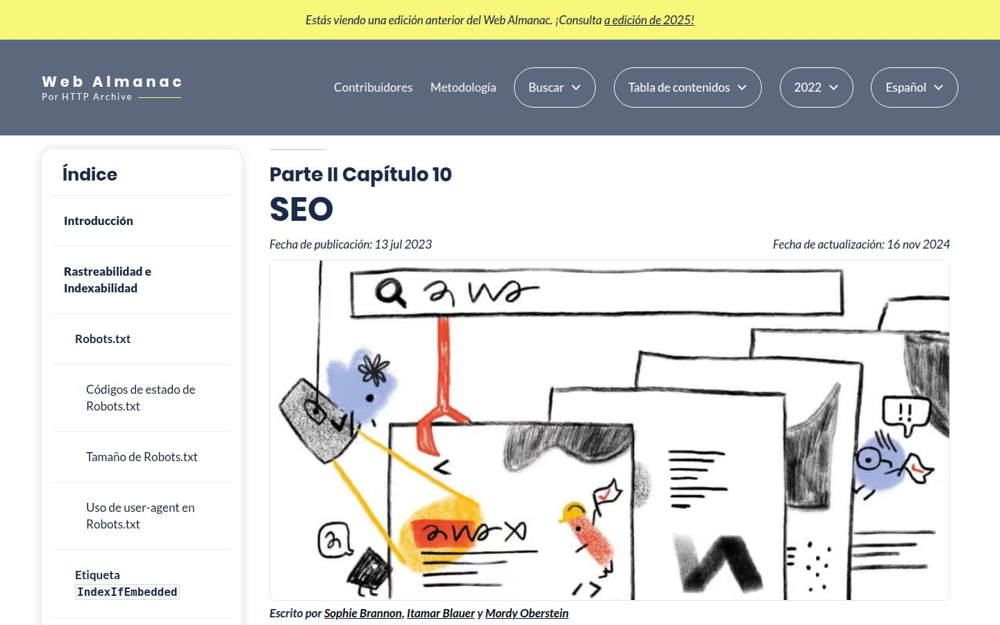</a><figcaption>Escritorio · toca para ampliar</figcaption></figure>
    <figure class="ref__m"><a href="c/c6-webalmanac-390.jpg" target="_blank" rel="noopener" aria-label="Ampliar la captura de teléfono de Web Almanac de HTTP Archive · capítulo SEO 2022, en castellano">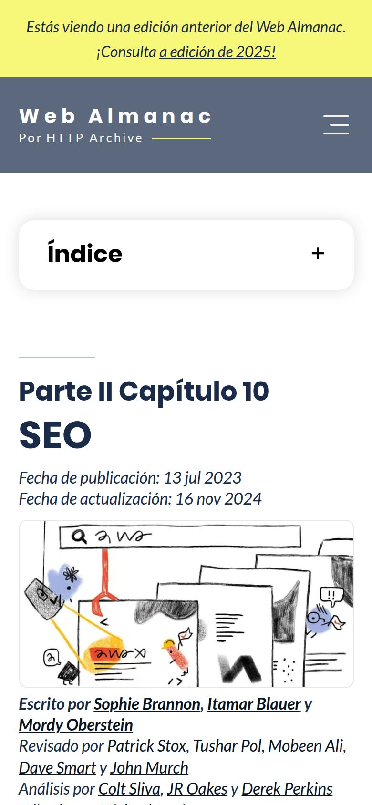</a><figcaption>Teléfono</figcaption></figure>
  </div>
  <details class="ref__completa"><summary>Ver la página completa</summary>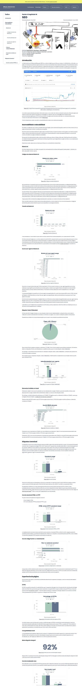</details>
  <dl class="ref__notas">
    <div><dt>Qué se toma</dt><dd>La ficha de autoría y vigencia bajo el título («Escrito por», «Revisado por», «Análisis por», con fecha de publicación y fecha de actualización) y las figuras numeradas con su pie y su fuente.</dd></div>
    <div><dt>Por qué se siente cálido</dt><dd>Cada capítulo nombra a quienes lo escribieron, lo revisaron y lo analizaron, lleva dos fechas, y las ilustraciones a mano le quitan frialdad al dato. Está en castellano y trata robots.txt, el mismo terreno de SpindleLab.</dd></div>
  </dl>
  <details class="ref__ojo"><summary>Lo que no se toma y los riesgos</summary><p>Cabecera gris pizarra a todo el ancho, Poppins con Lato (una geométrica muy vista) y una tarjeta de índice redondeada: el envoltorio es de plantilla y no se toma. Es un informe comunitario, no una firma. La edición en castellano es la de 2022 y arriba muestra una franja amarilla de «edición anterior»; la de 2025 existe solo en inglés.</p></details>
  <div class="ref__voto" role="group" aria-label="Tu marca para el 9">
    <button type="button" class="v" data-v="si" aria-pressed="false">Sí</button>
    <button type="button" class="v" data-v="no" aria-pressed="false">No</button>
    <label class="ref__com"><span class="sr">Comentario sobre el 9</span><textarea id="c-c6-webalmanac" rows="2" placeholder="Comentario (opcional): qué te gusta o qué no"></textarea></label>
    <p class="ref__estado" aria-live="polite"></p>
  </div>
</article>
</section>

<section class="linea" id="linea-d">
  <div class="linea__cab"><p class="linea__k">Línea D</p><h2>Oscura y cálida</h2><p class="linea__tesis">Lo oscuro como penumbra y no como pantalla: casi negro con algo de temperatura, texto a peso normal o ligero y una idea a la vez. Lectura honesta: en estas capturas el oscuro se ve más tibio que cálido. El pardo de Olson (11) apenas asoma, el carbón de Selendy (10) tira a frío y el verde de Hoare (12) está cerca del petróleo que marcaste. Si esta línea te gusta, el tablero de la compuerta tiene que probar un oscuro cálido de verdad antes de construir.</p><p class="linea__nota">Si marcas 1 (Gehl) y 11 (Olson Kundig), no es lo mismo: un sí a 1 es la foto de gente usando lo hecho como carga de la página, sobre claro; un sí a 11 es una frase grande por pantalla sobre el pardo oscuro. De 11 no entran la foto de debajo ni su forma de escribir la home: el texto de tu sitio se queda.</p></div>
  
<article class="ref" id="r10" data-id="d3-selendygay">
  <header class="ref__cab">
    <span class="ref__n">10</span>
    <div class="ref__nom">
      <h3>Selendy Gay</h3>
      <p class="ref__meta"><a href="https://www.selendygay.com" target="_blank" rel="noopener">selendygay.com</a> · servicios B2B</p>
    </div>
  </header>
  <div class="ref__vistas">
    <figure class="ref__d"><a href="d/d3-selendygay-1440.jpg" target="_blank" rel="noopener" aria-label="Ampliar la captura de escritorio de Selendy Gay"></a><figcaption>Escritorio · toca para ampliar</figcaption></figure>
    <figure class="ref__m"><a href="d/d3-selendygay-390.jpg" target="_blank" rel="noopener" aria-label="Ampliar la captura de teléfono de Selendy Gay"></a><figcaption>Teléfono</figcaption></figure>
  </div>
  <details class="ref__completa"><summary>Ver la página completa</summary>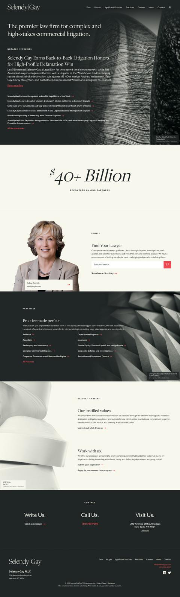</details>
  <dl class="ref__notas">
    <div><dt>Qué se toma</dt><dd>Secciones que alternan carbón #202625 y marfil #F7F7ED, con una serif Freight Display de 52 px a peso normal y un solo dato grande con su sujeto («$40+ Billion recovered by our partners»). La imaginería principal son fotos en blanco y negro de las obras de arte de su propia oficina, con la ficha del autor en la esquina.</dd></div>
    <div><dt>Por qué se siente cálido</dt><dd>La calidez no la pone el oscuro, que es neutro: la ponen la serif a peso normal, el marfil de las secciones claras y que las fotos son de obras de su propia oficina, firmadas.</dd></div>
  </dl>
  <details class="ref__ojo"><summary>Lo que no se toma y los riesgos</summary><p>Temperatura neutra tirando a fría: el carbón tiene un dejo verde y las fotos son grises, así que la calidez la ponen solo la serif y el marfil, que juntos rozan el cliché crema con serif. A 390 el texto va pegado al borde, sin margen lateral (defecto real del sitio). Es un estudio de litigios (YMYL). Además de las fotos en blanco y negro, la sección People lleva un retrato a color de un socio, y el sitio usa un acento coral rgb(239,72,82) en botones y enlaces: el coral no se toma.</p></details>
  <div class="ref__voto" role="group" aria-label="Tu marca para el 10">
    <button type="button" class="v" data-v="si" aria-pressed="false">Sí</button>
    <button type="button" class="v" data-v="no" aria-pressed="false">No</button>
    <label class="ref__com"><span class="sr">Comentario sobre el 10</span><textarea id="c-d3-selendygay" rows="2" placeholder="Comentario (opcional): qué te gusta o qué no"></textarea></label>
    <p class="ref__estado" aria-live="polite"></p>
  </div>
</article>

<article class="ref" id="r11" data-id="d1-olsonkundig">
  <header class="ref__cab">
    <span class="ref__n">11</span>
    <div class="ref__nom">
      <h3>Olson Kundig</h3>
      <p class="ref__meta"><a href="https://olsonkundig.com" target="_blank" rel="noopener">olsonkundig.com</a> · estudio</p>
    </div>
  </header>
  <div class="ref__vistas">
    <figure class="ref__d"><a href="d/d1-olsonkundig-1440.jpg" target="_blank" rel="noopener" aria-label="Ampliar la captura de escritorio de Olson Kundig">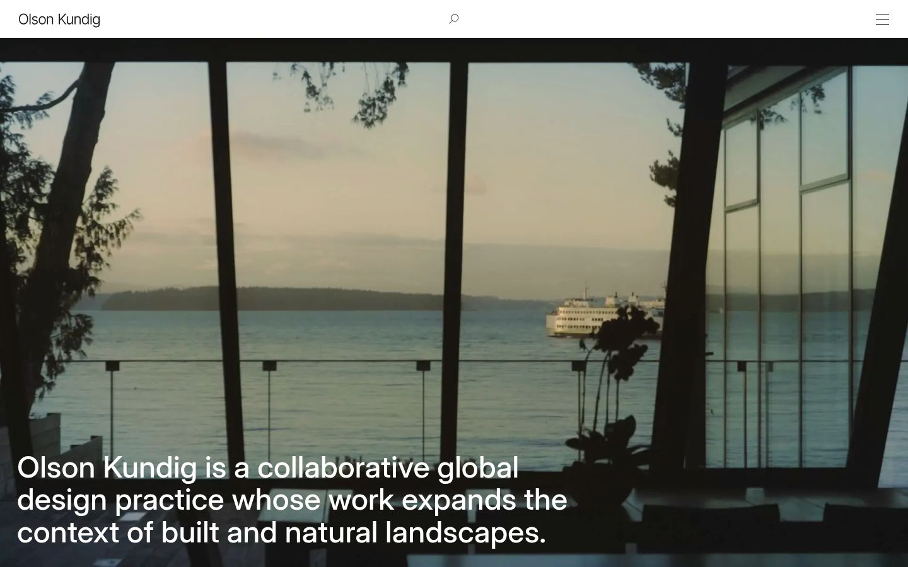</a><figcaption>Escritorio · toca para ampliar</figcaption></figure>
    <figure class="ref__m"><a href="d/d1-olsonkundig-390.jpg" target="_blank" rel="noopener" aria-label="Ampliar la captura de teléfono de Olson Kundig">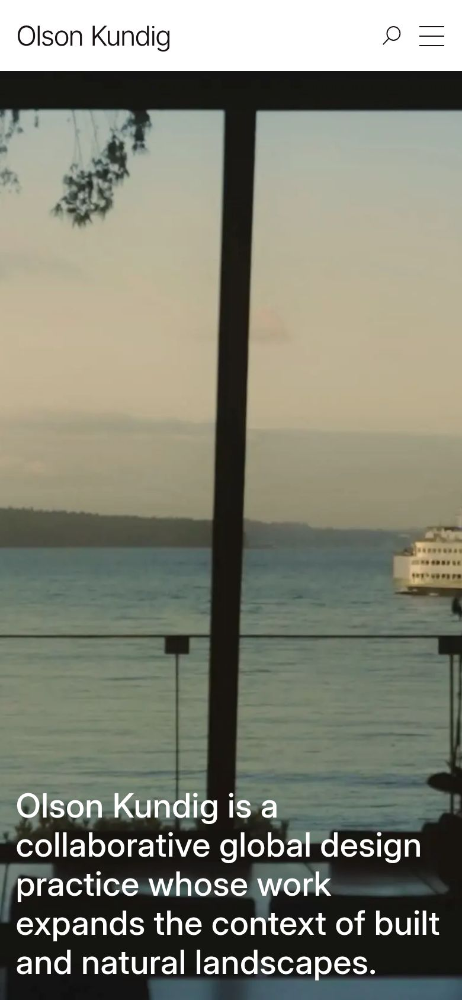</a><figcaption>Teléfono</figcaption></figure>
  </div>
  <details class="ref__completa"><summary>Ver la página completa</summary>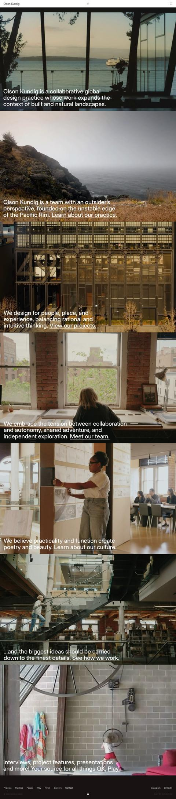</details>
  <dl class="ref__notas">
    <div><dt>Qué se toma</dt><dd>Una frase grande por pantalla, abajo a la izquierda (Inter 500, 48 px), con mucho aire y sobre el pardo #181213, que tira a madera quemada. La forma de contar la home frase a frase es escritura y no se toma: en tu sitio irían frases que ya existen.</dd></div>
    <div><dt>Por qué se siente cálido</dt><dd>Una idea por pantalla, con mucho aire y sin gritos tipográficos, y el negro del sitio es un pardo #181213 que tira a madera quemada y no a pantalla (se ve en el pie y mientras cargan los videos).</dd></div>
  </dl>
  <details class="ref__ojo"><summary>Lo que no se toma y los riesgos</summary><p>Es un estudio de arquitectura y en el sitio real cada frase va sobre un video a sangre, así que su primera pantalla se parece a la de 1 · Gehl: lo que se toma es la frase grande sobre el pardo, no la imagen. En SpindleLab las frases irían sobre el pardo liso o sobre las piezas reales de E9, y hay que comprobar en el tablero que siete frases sin foto no se lean vacías. Comparte con 4 · Nick Parker la prosa que hace de menú; lo propio de 11 es el ritmo visual, una frase grande por pantalla, frente a la página corta de Nick Parker. Se capturó en el modo sin movimiento, en el que el propio sitio muestra fotos fijas y el encabezado pasa a blanco. Lo que este sitio hace con la escritura no entra: el texto de tu sitio se queda como está.</p></details>
  <div class="ref__voto" role="group" aria-label="Tu marca para el 11">
    <button type="button" class="v" data-v="si" aria-pressed="false">Sí</button>
    <button type="button" class="v" data-v="no" aria-pressed="false">No</button>
    <label class="ref__com"><span class="sr">Comentario sobre el 11</span><textarea id="c-d1-olsonkundig" rows="2" placeholder="Comentario (opcional): qué te gusta o qué no"></textarea></label>
    <p class="ref__estado" aria-live="polite"></p>
  </div>
</article>

<article class="ref" id="r12" data-id="d6-hoare">
  <header class="ref__cab">
    <span class="ref__n">12</span>
    <div class="ref__nom">
      <h3>C. Hoare &amp; Co.</h3>
      <p class="ref__meta"><a href="https://www.hoaresbank.co.uk" target="_blank" rel="noopener">hoaresbank.co.uk</a> · otro</p>
    </div>
  </header>
  <div class="ref__vistas">
    <figure class="ref__d"><a href="d/d6-hoare-1440.jpg" target="_blank" rel="noopener" aria-label="Ampliar la captura de escritorio de C. Hoare &amp; Co.">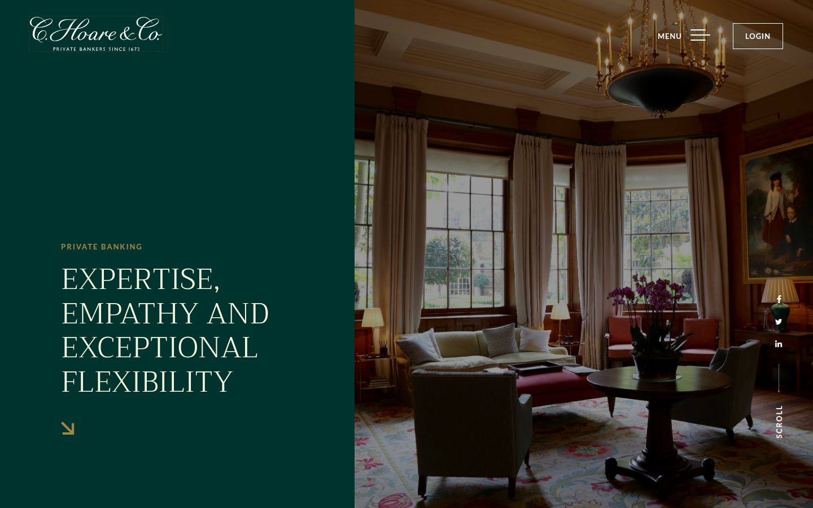</a><figcaption>Escritorio · toca para ampliar</figcaption></figure>
    <figure class="ref__m"><a href="d/d6-hoare-390.jpg" target="_blank" rel="noopener" aria-label="Ampliar la captura de teléfono de C. Hoare &amp; Co.">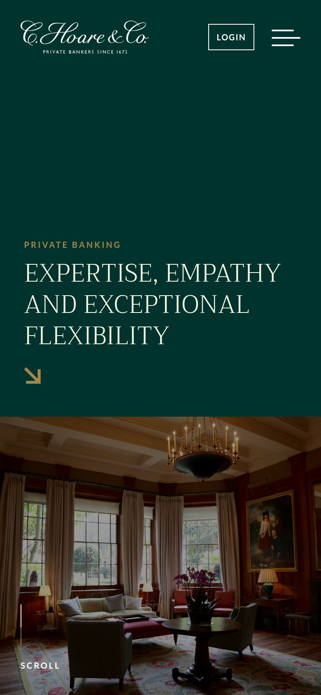</a><figcaption>Teléfono</figcaption></figure>
  </div>
  <details class="ref__completa"><summary>Ver la página completa</summary>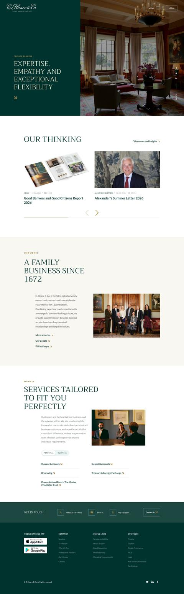</details>
  <dl class="ref__notas">
    <div><dt>Qué se toma</dt><dd>El verde casi negro rgb(0,51,46) con el titular en una serif ligera (Trirong, 51,8 px, peso 300) y, a su lado, una foto con luz de lámpara sobre madera y tela. La partición de la pantalla en dos mitades no se toma.</dd></div>
    <div><dt>Por qué se siente cálido</dt><dd>El verde casi negro tira a bosque y no a pantalla, el titular va en una serif ligera y no en una grotesca gruesa, y la foto de al lado es luz de lámpara sobre madera y tela. Más abajo muestra a la familia socia en su oficina: no promete, muestra a quién responde.</dd></div>
  </dl>
  <details class="ref__ojo"><summary>Lo que no se toma y los riesgos</summary><p>El dorado no se toma. Hoare lo usa como acento de rótulos: el antetítulo «Private Banking» es texto dorado rgb(163,135,71), la flecha ↘ también, y más abajo los rótulos «Who we are» y «Services» van en dorado rgb(137,111,17), con más flechas. Ya en la primera pantalla hay dos oros. Esa no es la regla de SpindleLab, que usa un solo oro por vista, en el punto del wordmark, y nunca en texto. Verde profundo con dorado y serif en mayúsculas es el cliché de la banca privada; mal llevado suena a lujo antiguo para una consultora de una persona. Ese verde está cerca del petróleo de driftime que marcaste: aquí es un solo color de marca, no un sistema de campos. Bajo el primer pantallazo el sitio es blanco y crema con bloques verdes. Es banca privada (YMYL), no servicios B2B. Se toma solo el primer pantallazo, aunque debajo el sitio sea claro: es la excepción a la regla que dejó fuera a otros sitios con solo el hero oscuro, porque es el único ejemplo vivo de un verde casi negro con luz de lámpara. La partición titular a la izquierda y foto a la derecha es un recurso muy visto: no es lo que se toma.</p></details>
  <div class="ref__voto" role="group" aria-label="Tu marca para el 12">
    <button type="button" class="v" data-v="si" aria-pressed="false">Sí</button>
    <button type="button" class="v" data-v="no" aria-pressed="false">No</button>
    <label class="ref__com"><span class="sr">Comentario sobre el 12</span><textarea id="c-d6-hoare" rows="2" placeholder="Comentario (opcional): qué te gusta o qué no"></textarea></label>
    <p class="ref__estado" aria-live="polite"></p>
  </div>
</article>
</section>
</main>

<script>
(function () {
  const tarjetas = [...document.querySelectorAll('.ref')];
  const estado = {};
  function pintar() {
    let si = 0, no = 0;
    for (const t of tarjetas) {
      const e = estado[t.dataset.id] || {};
      t.dataset.voto = e.voto || '';
      t.querySelectorAll('.v').forEach(b => b.setAttribute('aria-pressed', String(b.dataset.v === e.voto)));
      const ta = t.querySelector('textarea');
      if (document.activeElement !== ta && typeof e.comentario === 'string') ta.value = e.comentario;
      if (e.voto === 'si') si++; else if (e.voto === 'no') no++;
    }
    document.getElementById('n-si').textContent = si;
    document.getElementById('n-no').textContent = no;
    document.getElementById('n-marcados').textContent = si + no;
  }
  function sinGuardar() {
    document.getElementById('sin-db').hidden = false;
    tarjetas.forEach(t => { t.querySelectorAll('.v, textarea').forEach(el => el.disabled = true); });
  }
  tarjetas.forEach(t => t.querySelectorAll('.v, textarea').forEach(el => el.disabled = true));
  const pUse = window.claude && window.claude.use ? window.claude.use('db') : Promise.resolve(null);
  pUse.then(async (db) => {
    if (!db) return sinGuardar();
    let puede = null;
    try { const u = await window.claude.use('user'); puede = u ? await u.can('data.write') : null; } catch (e) {}
    if (puede === false) return sinGuardar();
    tarjetas.forEach(t => t.querySelectorAll('.v, textarea').forEach(el => el.disabled = false));
    const col = db.collection('marcas');
    col.onSnapshot((snap) => {
      for (const d of snap.docs) estado[d.id] = d.data() || {};
      pintar();
    }, () => { const a = document.getElementById('sin-db'); a.textContent = 'Se cortó la conexión con tus marcas. Recarga la página; si sigue, respóndeme en el chat con los números.'; a.hidden = false; });
    const enCurso = {};
    async function guardar(id, cambio, nota) {
      const t = tarjetas.find(x => x.dataset.id === id);
      const msg = t.querySelector('.ref__estado');
      const cuerpo = Object.assign({ voto: null, comentario: '' }, estado[id], cambio, { actualizado: new Date().toISOString() });
      estado[id] = cuerpo; pintar();
      while (enCurso[id]) { try { await enCurso[id]; } catch (e) {} }
      msg.textContent = 'Guardando…';
      enCurso[id] = col.doc(id).set(cuerpo);
      try { await enCurso[id]; msg.textContent = nota; }
      catch (e) {
        msg.textContent = (e && e.code === 'invalid_argument') ? 'Esta vista no puede guardar. Respóndeme por el chat.' : 'No se pudo guardar. Prueba de nuevo en un momento.';
        if (e && e.code === 'invalid_argument') sinGuardar();
      }
      finally { enCurso[id] = null; }
    }
    tarjetas.forEach(t => {
      const id = t.dataset.id;
      t.querySelectorAll('.v').forEach(b => b.addEventListener('click', () => {
        const actual = (estado[id] || {}).voto;
        const nuevo = actual === b.dataset.v ? null : b.dataset.v;
        guardar(id, { voto: nuevo }, nuevo ? 'Guardado' : 'Marca quitada');
      }));
      const ta = t.querySelector('textarea'); let timer;
      const enviar = () => { clearTimeout(timer); const v = ta.value.trim(); if (v !== ((estado[id] || {}).comentario || '')) guardar(id, { comentario: v }, 'Comentario guardado'); };
      ta.addEventListener('input', () => { clearTimeout(timer); timer = setTimeout(enviar, 1200); });
      ta.addEventListener('blur', enviar);
    });
  });
})();
</script>
